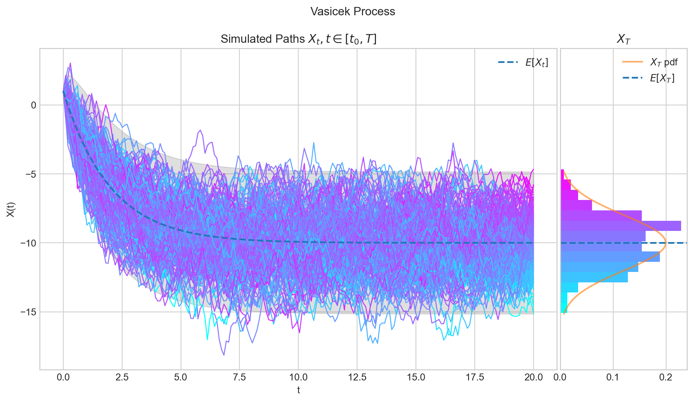

Vasicek Model/Process
Contents
4. Vasicek Model/Process#
The purpose of this notebook is to provide an illustration of the Vasicek Model/Processs and some of its main properties.

4.1. Definition#
The Vasicek model specifies that the instantaneous interest rate is defined by a stochastic process which can be defined by the following Stochastic Differential Equation (SDE)
with initial condition \(X_0 =x_0\in\mathbb{R}\), and where \(W_t\) is a standard Brownian motion, and the three parameters are constants:
\(\theta>0\) : speed or mean reversion coefficient
\(\mu \in \mathbb{R}\) : long term mean
\(\sigma>0\) : volatility
In order to find the solution to this SDE, let us set the function \(f(t,x) = x e^{\theta t}\). Then, Ito’s formula implies
Thus
Note
üìù The last expression implies that the process can take positive and negative values.
4.2. Marginal Distributions#
Equation (2) implies that for each \(t>0\), the variable \(X_t\) follows a normal distribution –since it can be expressed as the sum of a deterministic part and the integral of a deterministic function with respect to the Brownian motion.
Moreover, using the properties of the Brownian Motion we can obtain the following expressions for its expectation and variance
and
That is,
4.2.1. Expectation and Variance#
and
To calculate the expectation of \(X_t\) wi simply use the linearity of the expectation and the fact that the Ito integral in expression (2) is a martingale. Similarly, for the variance we only use properties of the variance and the isometry property of the Ito integral.
4.2.2. Covariance#
In addition, we can verify that
So, for given \(x_0, \theta>0, \mu, \sigma>0\) and \(t,s>0\) we can use the above formulas.
import numpy as np
x0 = 2.0
theta = 1.0
mu = 3.0
sigma = 0.5
t= 10
s = 5
exp = x0*np.exp(-1.0*theta*t) + mu*(1.0 - np.exp(-1.0*theta*t))
var = sigma**2/(2.0*theta)*(1 - np.exp(-2.0*theta*t))
cov = sigma**2/(2.0*theta)*np.exp(-1.0*(t+s))*(np.exp(2.0*theta*(np.min([t,s]))) - 1.0)
print(f'For x_0={x0}' , f'theta={theta}',f'mu={mu}', f'sigma=.{sigma}', f't={t}', f's={s}', sep=", ")
print(f'E[X_t]= {exp: .6f}')
print(f'Var[X_t]={var :.2f}')
print(f'Cov[X_t, X_s]={cov :.6f}')
For x_0=2.0, theta=1.0, mu=3.0, sigma=.0.5, t=10, s=5
E[X_t]= 2.999955
Var[X_t]=0.12
Cov[X_t, X_s]=0.000842
4.2.3. Marginal Distributions in Python#
Knowing the distribution –with its corresponding parameters– of the marginal distributions allows us to reproduce them with Python.
One way to do this is by using the object norm from the library scipy.stats. The next cell shows how to create \(X_1\) using this method.
from scipy.stats import norm
import numpy as np
x0 = 2.0
theta = 1.0
mu = 3.0
sigma = 0.5
t =1.0
X_1 = norm(loc=(x0*np.exp(-1.0*theta*t) + mu*(1.0 - np.exp(-1.0*theta*t))),
scale= np.sqrt( (sigma**2/(2.0*theta)*(1 - np.exp(-2.0*theta*t)) )) )
# Now we can calculate the mean and the variance of X_1
print(X_1.mean())
print(X_1.var())
2.6321205588285577
0.1080830895954234
Another way to do this is by creating an object Vasicek from aleatory.processes and calling the method get_marginal on it. The next cell shows how to create the marginal \(X_1\) using this method.
from aleatory.processes import Vasicek
x0 = 2.0
theta = 1.0
mu = 3.0
sigma = 0.5
t =1.0
process = Vasicek(theta=theta, mu=mu, sigma=sigma, initial=x0)
X_1 = process.get_marginal(t=1)
print(X_1.mean())
print(X_1.var())
2.6321205588285577
0.1080830895954234
Hereafter, we will use the latter method to create marginal distributions from the Vacisek process.
4.2.4. Probability Density Functions#
The probability density function (pdf) of the marginal distribution \(X_t\) is given by the following expression
Let’s take a look at the density function of \(X_1\) for different values of \(\theta\), \(\mu\), and \(\sigma\).
import matplotlib.pyplot as plt
plt.style.use("seaborn-v0_8-whitegrid")
plt.rcParams["figure.figsize"] = (12, 6)
%config InlineBackend.figure_format ='retina'
process = Vasicek(theta=1.0, mu=1.0, sigma=0.5, initial=1.0)
X_1 = process.get_marginal(t=1)
x = np.linspace(0, X_1.ppf(0.999), 100)
plt.plot(x, X_1.pdf(x), '-', lw=1.5, alpha=0.75, label=f'$t$={1:.2f}')
plt.title(f'$X_1$ pdf')
plt.show()

fig, axs = plt.subplots(1, 3, figsize=(18, 6))
theta_values = ( [0.1, 0.2, 0.3], [1, 2, 3], [10, 20, 30])
for (thetas, ax) in zip(theta_values, axs):
for theta in thetas:
process = Vasicek(theta=theta, mu=10.0, sigma=0.5, initial=1.0)
X_t = process.get_marginal(t=1.0)
x = np.linspace(0, X_t.ppf(0.999), 100)
ax.plot(x, X_t.pdf(x), '-', lw=1.5,
alpha=0.75, label=f'$\\theta$={theta:.2f}')
ax.legend()
fig.suptitle(r'$X_1$ pdf from a Vasicek process with $\mu = 10.0, \sigma=0.5$ and $x_0$=1.0')
plt.show()

fig, axs = plt.subplots(1, 3, figsize=(18, 6))
mu_values = ([ -1, -2, -3], [0], [1, 2, 3])
for (mus, ax) in zip(mu_values, axs):
for mu in mus:
process = Vasicek(theta=1.0, mu=mu, sigma=0.5, initial=1.0)
X_t = process.get_marginal(t=1.0)
x = np.linspace(X_t.ppf(0.001), X_t.ppf(0.999), 100)
ax.plot(x, X_t.pdf(x), '-', lw=1.5,
alpha=0.75, label=f'$\mu$={mu:.2f}')
ax.legend()
fig.suptitle(r'$X_1$ pdf from a Vasicek process with $\theta = 1.0, \sigma=0.5$ and $x_0$=1.0')
plt.show()

fig, axs = plt.subplots(1, 3, figsize=(18, 6))
sigma_values = ([0.01, 0.02, 0.05], [0.1, 0.2, 0.5], [1, 2, 3])
for (sigmas, ax) in zip(sigma_values, axs):
for sigma in sigmas:
process = Vasicek(theta=1.0, mu=10.0, sigma=sigma, initial=1.0)
X_t = process.get_marginal(t=1.0)
x = np.linspace(X_t.ppf(0.001), X_t.ppf(0.999), 100)
ax.plot(x, X_t.pdf(x), '-', lw=1.5,
alpha=0.75, label=f'$\sigma$={sigma:.2f}')
ax.legend()
fig.suptitle(r'$X_1$ pdf from a Vasicek process with $\theta = 1.0, \mu=10.0$ and $x_0$=1.0')
plt.show()

process = Vasicek(theta=1.0, mu=10.0, sigma=0.5, initial=1.0)
fig, axs = plt.subplots(1, 3, figsize=(18, 6))
t_values = ([0.1, 0.2, 0.3, 0.5], [1, 2, 3], [10,])
for (ts, ax) in zip(t_values, axs):
for t in ts:
X_t = process.get_marginal(t=t)
x = np.linspace(X_t.ppf(0.001), X_t.ppf(0.995), 100)
ax.plot(x, X_t.pdf(x), '-', lw=1.5,
alpha=0.75, label=f'$t$={t:.2f}')
ax.legend()
fig.suptitle(r'$X_t$ pdf from a Vasicek process with $\theta = 1.0, \mu=10.0, \sigma=0.5$, and $x_0$=1.0')
plt.show()

4.2.5. Sampling#
Now, let’s see how to get a random sample from \(X_t\) for any \(t>0\).
The next cell shows how to get a sample of size 5 from \(X_1\).
from aleatory.processes import Vasicek
process = Vasicek(theta=1.0, mu=10.0, sigma=0.5, initial=1.0)
X_1= process.get_marginal(t=1.0)
X_1.rvs(size=5)
array([6.45291747, 6.55008179, 6.43440687, 6.15045302, 7.35678685])
Similarly, we can get a sample from \(X_{10}\)
X_10 = process.get_marginal(t=10)
X_10.rvs(size=5)
array([9.66367674, 9.96974651, 9.63085026, 9.76048926, 9.47589404])
4.3. Simulation#
In order to simulate paths from a stochastic process, we need to set a discrete partition over an interval for the simulation to take place.
For simplicity, we are going to consider an equidistant partition of size \(n\) over \([0,T]\), i.e.:
Then, the goal is to simulate a path of the form \(\{ X_{t_i} , i=0,\cdots, n-1\}\). We will use Euler-Maruyama approximation.
4.3.1. Simulating and Visualising Paths#
We can simulate several paths from a Vasicek process and visualise them we can use the method plot from the aleatory library.
Let’s simulate 10 paths over the interval \([0,1]\) using a partition of 100 points.
Tip
Remember that the number of points in the partition is defined by the parameter \(n\), while the number of paths is determined by \(N\).
from aleatory.processes import Vasicek
process = Vasicek(theta=1.0, mu=10.0, sigma=0.5, initial=2.0)
process.plot(n=100, N=10, title='10 paths of the Vasicek Process')
plt.show()

Note
In all plots we are using a linear interpolation to draw the lines between the simulated points.
Similarly, we can define the process over the interval \([0, 5]\) and simulate 50 paths with a partition of size 100.
process = Vasicek(theta=1.0, mu=10.0, sigma=0.5, initial=1.0, T=5.0)
process.plot(n=200, N=100, title='100 paths of the Vasicek Process')
plt.show()

4.4. Long Time Behaviour#
4.4.1. Expectation and Variance#
Note that when \(t\) goes to infinity, we have
and
So, the marginal distribution \(X_t\) given an initial point \(x_0\) converges to
as \(t\) goes to infinity.
def draw_mean_variance(x0, theta, mu, sigma, T=100):
process = Vasicek(theta=theta, mu=mu, sigma=sigma, initial=x0, T=T)
ts = np.linspace(0, T, T)
means = process.marginal_expectation(ts)
variances = process.marginal_variance(ts)
fig, (ax1, ax2,) = plt.subplots(1, 2, figsize=(9, 4))
ax1.plot(ts, means, lw=1.5, color='black', label='$E[X_t]$')
ax1.set_xlabel('t')
ax1.legend()
ax2.plot(ts, variances, lw=1.5, color='red', label='$Var[X_t]$')
ax2.set_xlabel('t')
ax2.legend()
fig.suptitle(
'Expectation and Variance of $X_t$ with ' f'$x_0$={x0:.2f}, $\\theta$={theta:.2f}, $\mu$={mu:.2f}, $\sigma$={sigma:.2f}', size=12)
plt.show()
draw_mean_variance(theta=1.0, mu=10.0, sigma=0.5, x0=1.0, T=10)

draw_mean_variance(theta=0.1, mu=10.0, sigma=0.5, x0=-2.0, T=10)

4.4.2. Marginal#
The marginal distribution \(X_t\) given an initial point \(x_0\) converges to
as \(t\) goes to infinity.
process = Vasicek(theta=1.0, mu=10.0, sigma=2.0, initial=1.0, T=1.0)
process.draw(n=100, N=100, title='Vasicek Process before reaching convergence to the asymptotic distribution')
plt.show()

process = Vasicek(theta=1.0, mu=10.0, sigma=2.0, initial=1.0, T=10.0)
process.draw(n=100, N=100, title='Vasicek Process reaching convergence to the asymptotic distribution')
plt.show()

4.4.2.1. The parameter \(\theta\) determines the Speed of Convergence#
process = Vasicek(theta=5.0, mu=10.0, sigma=2.0, initial=1.0, T=1.0)
process.draw(n=100, N=100, title='Vasicek Process quickly reaching convergence to the asymptotic distribution')
plt.show()

process = Vasicek(theta=0.1, mu=10.0, sigma=2.0, initial=1.0, T=50.0)
process.draw(n=100, N=100, title='Vasicek Process slowly reaching convergence to the asymptotic distribution')
plt.show()

4.4.2.2. The parameter \(\sigma\) determines the volatility in the simulation#
process = Vasicek(theta=1.0, mu=10.0, sigma=0.5, initial=1.0, T=1.0)
process.draw(n=100, N=100, title='Vasicek Process with low volatility')
plt.show()

process = Vasicek(theta=1.0, mu=10.0, sigma=5.0, initial=1.0, T=1.0)
process.draw(n=100, N=100, title='Vasicek Process with high volatility')
plt.show()

4.5. Visualisation#
To finish this note, let’s take a final look at a some simulations from the Vasicek process.
from aleatory.processes import Vasicek
process = Vasicek(theta=0.5, mu=10.0, sigma=2.0, initial=-1.0, T=20.0)
process.draw(n=200, N=200, envelope=True)
plt.show()

from aleatory.processes import Vasicek
process = Vasicek(theta=0.5, mu=-10.0, sigma=2.0, initial=1.0, T=20.0)
process.draw(n=200, N=200, envelope=True, colormap="cool", title='Vasicek Process')
plt.show()

from aleatory.processes import Vasicek
import matplotlib.pyplot as plt
import numpy as np
process = Vasicek(theta=1.0, mu=-10.0, sigma=np.sqrt(2), initial=0.0, T=12.0)
path = process.simulate(n=1000, N=1)
ts = process.times
exp = process.marginal_expectation(ts)
plt.plot(ts, path[0], label= f'$x_0$ = 0, $\mu$ = -10')
plt.plot(ts, exp, color='grey',linewidth=2)
for x0 in [-10.0, 0.0, 10.0]:
process = Vasicek(theta=1.0, mu=0.0, sigma=np.sqrt(2), initial=x0, T=12.0)
path = process.simulate(n=1000, N=1)
plt.plot(ts, path[0], label= f'$x_0$ = {x0:.0f}, $\mu$ = 0')
exp = process.marginal_expectation(ts)
plt.plot(ts, exp, color='grey', linewidth=2)
plt.plot(ts, exp, color='grey', label=f'$E[X_t]$')
plt.legend()
plt.title('Four Paths from the Vasicek Model\n $dX_t = \\theta(\mu - X_t) dt + \sigma dW_t$\n with $\\theta = 1, \sigma = \sqrt{2}$')
plt.show()

4.6. References and Further Reading#
Damiano Brigo, Fabio Mercurio (2001). Interest Rate Models – Theory and Practice with Smile, Inflation and Credit
Vasicek, O. (1977). “An equilibrium characterization of the term structure”. Journal of Financial Economics.